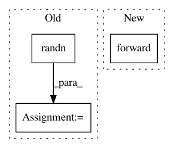

0940b083d3cdd0db46c867523e9a58b196e6e9d5,python/test/function/test_assign.py,,test_assign_forward_backward,#Any#Any#Any#,30
Before Change
def test_assign_forward_backward(seed, ctx, func_name):
from nbla_test_utils import function_tester
rng = np.random.RandomState(seed)
inputs = [rng.randn(2, 3, 4).astype(np.float32) * 2 for _ in range(2)]
grads = np.zeros((48,))
function_tester(rng, F.assign, lambda dst, src: src, inputs, ref_grad=lambda *args: grads,
ctx=ctx, func_name=func_name, atol_f=1e-3, atol_b=1e-2)
After Change
assign = F.assign(dst, src)
src.d = np.random.random((2, 3, 4))
assign.forward()
assert np.allclose(dst.d, src.d)
dummy = assign + np.random.random()
In pattern: SUPERPATTERN
Frequency: 3
Non-data size: 3
Instances
Project Name: sony/nnabla
Commit Name: 0940b083d3cdd0db46c867523e9a58b196e6e9d5
Time: 2019-01-09
Author: takuma.seno@gmail.com
File Name: python/test/function/test_assign.py
Class Name:
Method Name: test_assign_forward_backward
Project Name: kymatio/kymatio
Commit Name: 4f91cb1bfab978c05a30de8a70e36426aaa19df5
Time: 2018-11-21
Author: janden@flatironinstitute.org
File Name: examples/3d/compute_speed.py
Class Name:
Method Name:
Project Name: cornellius-gp/gpytorch
Commit Name: 959661cb22f8f29a7175aecc008fde22652aaee2
Time: 2017-08-18
Author: jrg365@cornell.edu
File Name: gpytorch/inference/posterior_models/variational_gp_posterior.py
Class Name: _VariationalGPPosterior
Method Name: marginal_log_likelihood